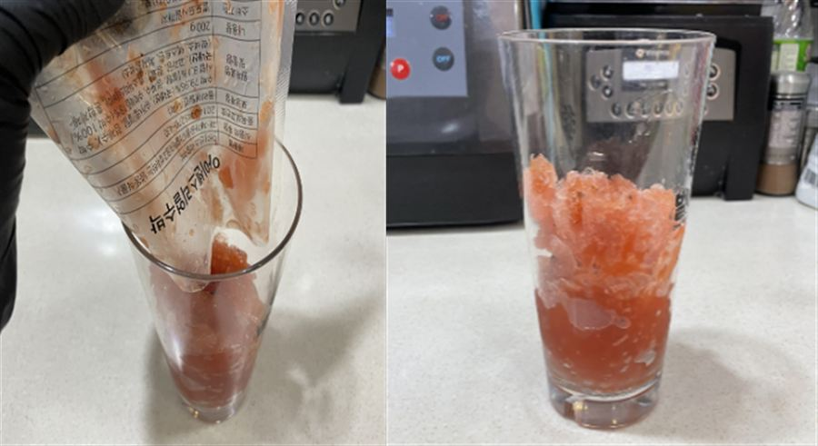

| 메뉴명 | 리얼수박주스 |
|---|---|
| 판매가격 | 5,000원 |
| 원재료 | 냉동 수박주스, 정수물, 얼음 |
| 사용 부자재 | 16oz 아이스컵, 리드뚜껑, 버블티빨대 |
제조방법
1
냉동 수박주스 1팩을 700w 전자레인지에 넣고 30초간 돌린다.
(※ 냉장 해동 후 사용 시, 2일 안에 사용해야 함)
냉동 수박주스 1팩을 700w 전자레인지에 넣고 30초간 돌린다.
(※ 냉장 해동 후 사용 시, 2일 안에 사용해야 함)
2
16oz컵에 수박주스를 부어준다.
16oz컵에 수박주스를 부어준다.

3
정수물 100g을 넣고 바스푼으로 섞어준다.
정수물 100g을 넣고 바스푼으로 섞어준다.
4
얼음을 가득 담고 리드뚜껑을 덮은 뒤, 버블티빨대와 함께 제공한다.
얼음을 가득 담고 리드뚜껑을 덮은 뒤, 버블티빨대와 함께 제공한다.
※ 주의사항
- 수박주스는 냉동 보관 후 제조 시, 렌지 해동 원칙
- 냉장고에서 해동 후 사용해도 가능하나, 해동 후 상미기한 24시간